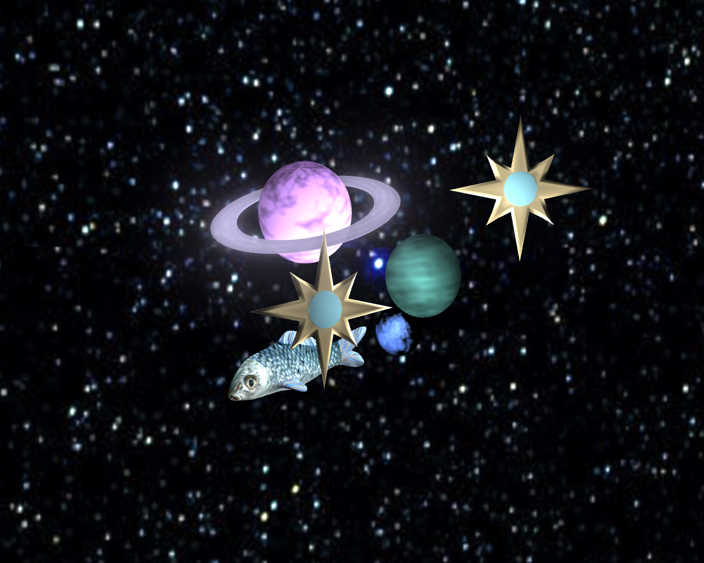

In my work, a fish swims around in a fantasy outer space. I made it since I thought it would look cool, although a possible deeper meaning could be: things that are out of place can still function. I tried to go for an ethereal and intriguing aura to my models and animation.
Single frame of animation:
